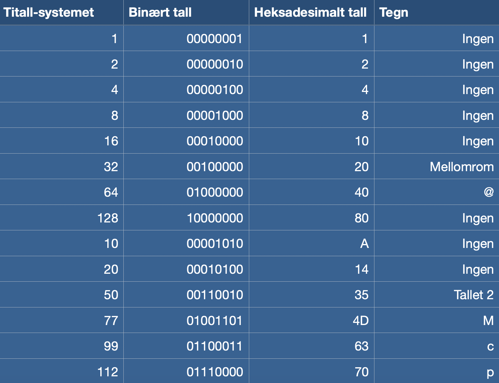

Tegnsettet
Hvert enkelt tegn som vises på skjermen i datamaskinen har et tilhørende tall. For at datamaskinen skal forstå tallene som hører til, og gjengi tegnene på skjermen, må de bli gjort om til binære tall.
UTF-8
Hvert siffer i det binæret tallet tar opp 1 bit i lagrinsplass. I UTF-8 får hvert tegn et binært tall av 8 bit som tilsvarer 1 byte. Det som gjør UTF-8 spesielt er at hvert tegn kan ha opp til 4 byte, og dermed kan det være opp til 1 million ulike tegn i systemet. Dette geniale tegnsettet gjør sånn at man kan vise alle ulike tegn fra alle ulike språk, og er en veldig bra oppgradering fra det tidligere tegnsettet ANSI.

Heksadesimale tall
Heksadesimale tall funker som et godt mellomledd mellom normale tall og binære tall. De er lettere å oversette til binære tall for PCen, og lettere å oversette til normale tall for oss mennesker. Ovenfor ser vi noen eksempler på heksadesimale tall.
Disse tallene er i 16-tallssystemet. Det betyr at hvis man for eksempel skal gjøre om 320, blir det 1*16^3 + 4*16^1 + 0*16^0 som da er 140 i heksadesimale tall. I tillegg blir tall over 9 representert i bokstaver. Så A=10, B=11 og C=12.